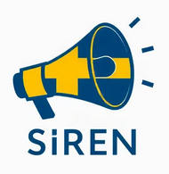

Swedish Requirements
Engineering Network

- SiREN is a non-profit network of academic
scholars in Sweden with a deep interest in Requirements
Engineering (RE) research and practice.
- Our annual meetings focus on Swedish PhD students
with a thesis project in any way connected to requirements of
software-based systems.
- We also invite research-oriented software engineering
practitioners from Swedish industry with a deep
interest in RE.
Organisation
SiREN Signals
We have since 2003 held annual network meetings aka Signals, were we
exchange ideas and discuss any interesting topics related to
requirements of software-based systems, including research, teaching and
practice of RE. Signals are typically lunch to lunch at a university
somewhere in Sweden. Everyone travels on their own budget and we aim at
a minimal admin overhead.
Past Signals
- 2024, Linköping May 13 -14
- 2023, Göteborg 2-3 Nov, 20 YEARS ANNIVERSARY
- (2020 planned for Göteborg, cancelled by Corona)
- 2019, Lund, May 7-8
- 2018, Linköping, May 7-8, 15 YEARS ANNIVERSARY
- 2017, Karlskrona, May 11-12
- 2016, Stockholm, May 26-27
- 2015, Västerås, May 25-26
- 2013, Malmö, May 30-31, 10 YEARS ANNIVERSARY
- 2012, Göteborg, May 3-4
- 2011, Jönköping, May 12-13
- 2010, Ronneby, April 26-27
- 2009, Lund April 27-28
- 2008, Umeå, March 27-28, 5 YEARS ANNIVERSARY
- 2007, Göteborg, March 15-16
- 2006, Ronneby, May 23-24
- 2005, Skövde, April 14-15
- 2004, Linköping, October 20-21
- 2004, Stockholm, April 15-15
- 2003, Lund, October 22-23
- 2003, Lund, June 12-13
Core RE-publication forums
If you are doing software engineering research with a requirements
engineering angle you can publish here: * Requirements Engineering,
journal: REJ,
Springer-Nature * Requirements Engineering, international
conference: RE,
IEEE/ACM * Requirements Engineering Foundation for Software
Engineering, working conference: REFSQ
Contribute
Contribute to these pages by opening an issue and subsequent pull
request here:
github.com/sirensweden/sirensweden.github.io